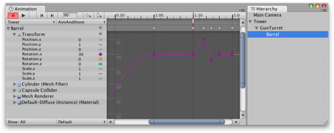

Objects with Multiple Moving Parts
You may want to animate Game Objects that have multiple moving parts, such as a gun turret with a moving barrel, or a character with many body parts. All the parts can be animated by a single Animation component on the parent, although it is useful to have additional Animation components on the children in some cases.
Animating Child Game Objects
The Game Object hierarchy is shown in the panel to the left of the Animation View.
You can access the children of a Game Object by using the foldout triangle next to the object's name. The properties of child objects can be animated just like those of the parent.

Child Game Objects can be folded out in the Animation View.
Alternatively you can select just the child Game Object you want to animate from the Hierarchy panel or the scene view. When you do this, only the child object is shown in the property list, although the animation data is still handled by the Animation component on the parent.

The child Game Objects selected in the Hierarchy View are shown in the Animation View.
The child Game Objects selected in the Hierarchy View are shown in the Animation View.
Handling Multiple Animation Components
If both a parent object and one of its children both have an Animation component then either component can animate the child object. The property list can be used to select which one you want to use.

Select the Animation component you want to edit from the property list
As an example, you may have a multiple characters (a hero and sidekick, say) that each have their own Animation component. You could have another Game Object in the same scene whose Animation component is used for controlling cutscenes. The cutscene might involve both the hero and sidekick characters walking around, which could be achieved by animating their positions from the cutscene controller. However, both characters would need to be children of the cutscene object to be controlled by its Animation component.
Page last updated: 2011-11-16